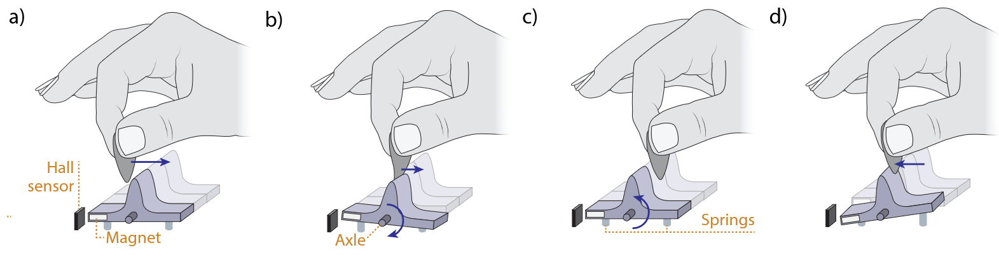

GuitarFins: Skillful Input Triggering with a Guitar Pick

(opens in new tab)
Venue. UIST (2026)
Materials.
PDF(opens in new tab)
Abstract. Having a guitar strapped on inevitably restricts physical movement when it comes to using digital interfaces (e.g., via mouse and keyboard) or adjusting equipment settings in between. Furthermore, guitarists typically use a guitar pick, which is often an additional hindrance—the pick often needs to be tucked or put down whenever having to operate an interface, which incurs additional context switching costs. However, we believe that the guitar pick can be turned from a hindrance into an opportunity by utilizing the guitarists’ dexterity with a pick for fast and convenient user input. We introduce GuitarFins—physical input elements, with which the pick becomes the end-effector for physical user input. To test the performance and subjective experience of using guitar-embedded input while holding a pick, we conducted a user study with 16 guitarists for which we augmented two guitars—one with GuitarFins and one with buttons. We found a variety of nuanced differences in terms of performance and individual preferences.
Link to this page: